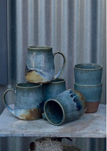

Callaghan Creative

Mae Susanna a Phil Callaghan yn artistiaid mewn pren:
yn troi a cherflunio pren caled o ffynonellau lleol yn siapiau organig wedi’u hysbrydoli gan fywyd gwyllt, cefn gwlad a’r môr.
Susanna and Phil Callaghan are artists in wood:
turning and sculpting locally-sourced hardwood into organic shapes inspired by wildlife, countryside and sea.
01248 491915
info@callaghancreative.com
callaghancreative.com
CAE MERDDYN, CAIM, PENMON, BEAUMARIS, LL58 8SRP
O Biwmares ewch yn syth trwy Llangoed i ben yr allt. Trowch i’r chwith ar y gyffordd-T ac yna cymerwch y troad nesaf i’r dde ac mae ein stiwdio ar y chwith ar y groesffordd yng nghanol Caim.
From Beaumaris go straight through Llangoed to the top of the hill. Turn left at the T junction and then take the next turn right and our studio is on the left at the crossroads in the centre of Caim.